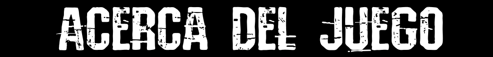

Slendytubbies III Re-Worked
Slendytubbies III Re-Worked es la remasterización no oficial del juego Slendytubbies 3 lanzado el 28/08/2017 creado por ZeoWorks.
¡Hola! Aquí DW o mejor conocido anteriormente como "DekerWin". Si es la primera vez que te encuentras con este proyecto, quizás tengas dudas o preguntas. Yo responderé algunas generales y otras las puedo responder en Discord junto con mi equipo de moderadores.
¿Qué es este proyecto de Slendytubbies III?
Este proyecto fue creado para darle una continuación al DLC cancelado y darle un final claro a la historia de Slendytubbies 3 original. Este juego incluirá logros en la campaña y DLC, mejoras, elementos de la beta no añadidos, cosas del DLC planeadas, y elementos nuevos para darle más coherencia a la historia, etc.
¿Cuánto progreso lleva el juego? ¿Es una DEMO?
Pues, el juego en su estado actual con la campaña terminada representa solo un 30% del juego completo. Y sí, lo considero como una demo porque aún queda mucho por terminar.
¿Desde cuándo se lleva desarrollando este juego/proyecto?
Lleva aproximadamente desde junio de 2022, aunque se pausó. Prácticamente, el desarrollo continuó desde finales de 2022 e inicios de 2023.
¿Hay streams de desarrollo del juego?
¡Claro que sí! (aunque no son diarios ni semanales). Puedes encontrarlos en mi canal de YouTube, que está en la página principal.
¿Se puede descargar?
¡Claro que sí! Puedes encontrar el link de descarga abajo de esta pregunta.